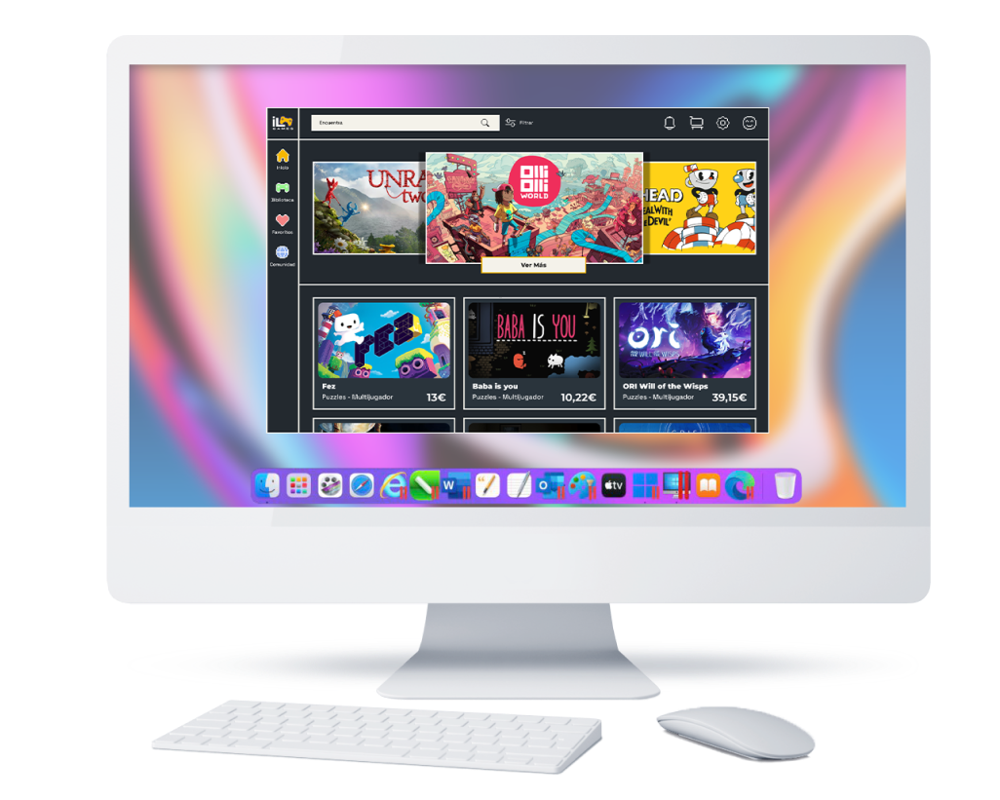
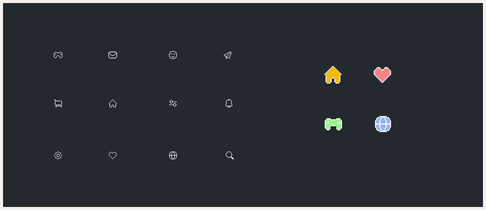
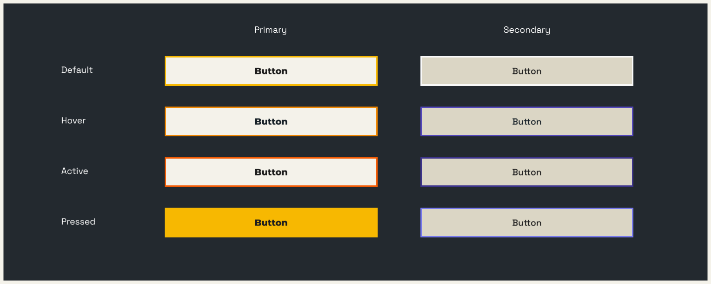
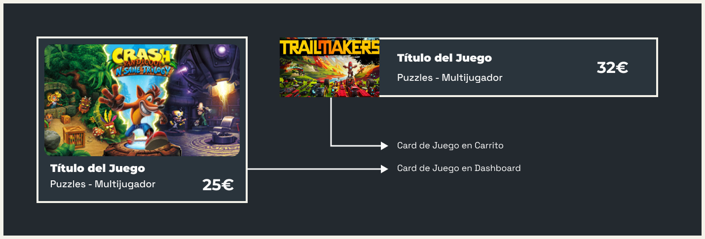
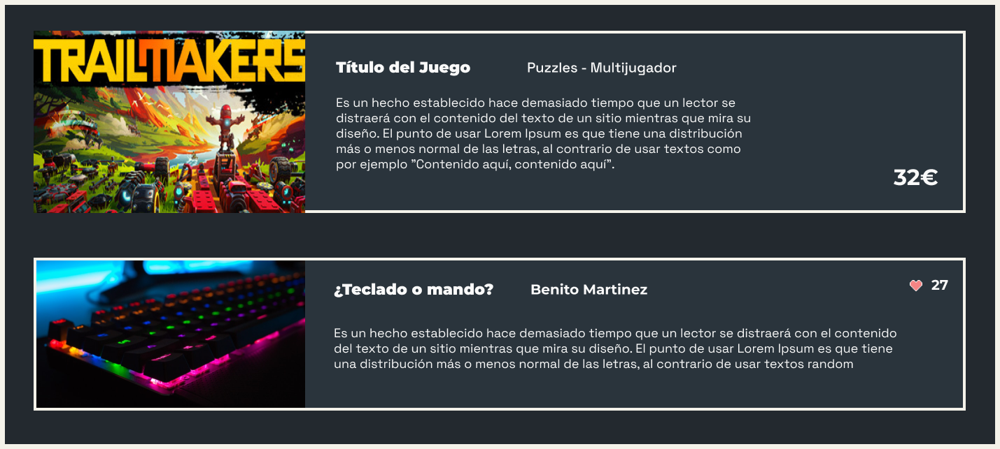
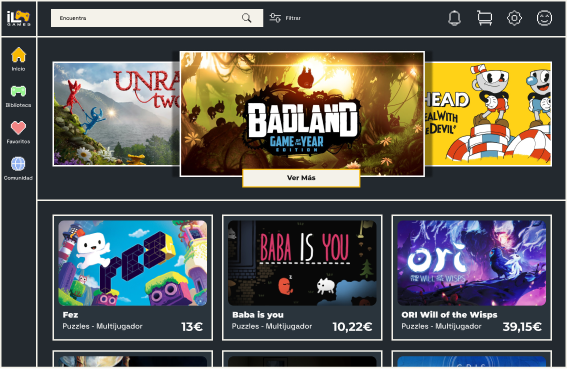
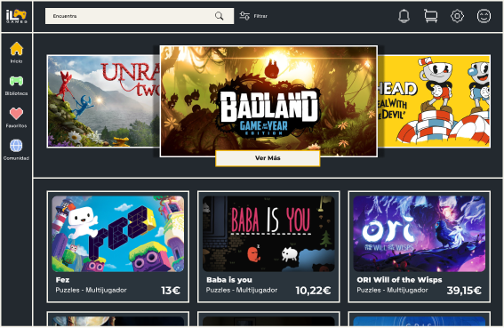
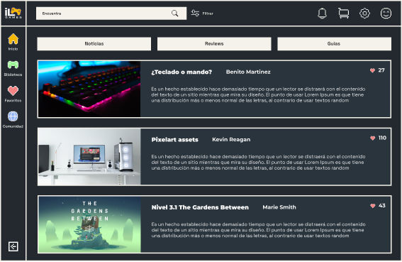
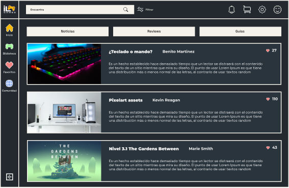

Proyecto UI
Indie Land. Desktop app.
Proyecto de diseño de interfaz de una plataforma de venta de videojuegos indies.
Enero - Marzo 2023 // Figma. 
Es un proyecto que viene a cubrir todo ese abanico de
juegos indies y de productoras pequeñas que compiten por su
hueco en la enorme y creciente industria de los videojuegos.
En primer lugar definí 3 protopersonas cuyos criterios dan una visión clara de quiénes son nuestros usuarios y cómo interactuarán con el producto.
Benchmark.
Indie Land no llega para innovar en el mercado de los marketplaces dedicados a los videojuegos, si no a brindar
una comunidad accesible para quién quiere explorar esos juegos que ni si quiera aparecen en las reviews de los
periodistas de esta industria.
Además llega con las ganas de hacer también un hueco a esos desarrolladores independientes que se encuentran desarrollando
su propio videojuego sin el respaldo de las grandes compañías.
Moodboard
Un moodboard acorde a los valores del producto es crucial para establecer la dirección visual y emocional correcta, generando coherencia y conexión con los usuarios.
En este caso predomina la estetica 8bit, las lineas rectas y la utilización de pixel art para ilustraciones.
DESING SYSTEM
Tipografía.
Montserrat como tipografía de actualidad, para titulos y tamaños grandes y Space Grotesk de estilo más retro para cuerpo y tamaños de letra pequeños.
Color.
La elección de la paleta de color está basada en los valores que estos tienen.
El naranja transmite energía, creatividad y entusiasmo, reflejando la naturaleza innovadora y emocionante de los videojuegos independientes. Por otro lado, el violeta aporta un toque de misterio, sofisticación y originalidad, capturando la esencia única y artística de estos juegos. Juntos, estos colores crean un equilibrio entre la emoción y la elegancia, brindando una experiencia visual atractiva y coherente para los usuarios de la aplicación de escritorio.
Grid.
En primer lugar un Aside Bar con la navegacíon más elemental de la app. En ella se encuentran los 4 secciones principales. En la parte de arriba, la barra de navegación superior que permite tener siempre al alcance el input de búsqueda, el filtrado (lo que permite hacer uso de estos componentes en cualquier pantalla) y como es habitual, ajustes, notificaciones y perfil, además de la cesta de la compra. En el dashboard, la sección más navegable, encontramos un grid de 12 columnas con el que poder organizar los muchísimos productos que se actualizan a diario.
Iconos y botones.
Estilo 8bit en los iconos y borde de corte recto de color en los botones. Esto hace de la experiencia de la navegación un viaje al pasado con carácter retro.
 Componentes.
Las Cards de producto y entradas de blog son componentes reutilizables donde se muestra la información esencial para la navegación.
 Wireframes.
La composición de wireframes de baja, media y alta son necesarios para la creación de un prototipo interactivo con el que mostrar al cliente el resultado de la investigación y el diseño. Por otro lado, nos sirve para hacer pruebas de usuario y su posterior estudio de la experiencia de navegación.

 


 

Por último, construí el flujo de interacción principal donde se muestra el proceso de compra y sus flujos alternativos, terminando en las wireframes de checkout.
Estas pantallas son cruciales para proporcionar a los usuarios la confirmación de que su compra se ha realizado exitosamente y brindarles información relevante sobre su pedido, como el resumen de los artículos adquiridos, el precio total y los detalles de envío. Además, su diseño debe ser intuitivo y claro, facilitando una experiencia fluida y sin contratiempos para los usuarios al completar su compra.